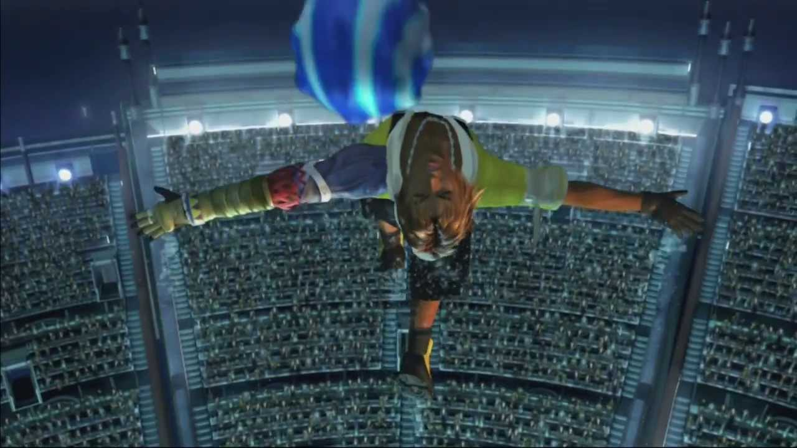
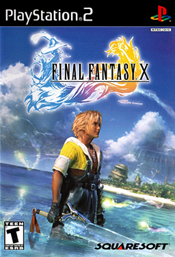
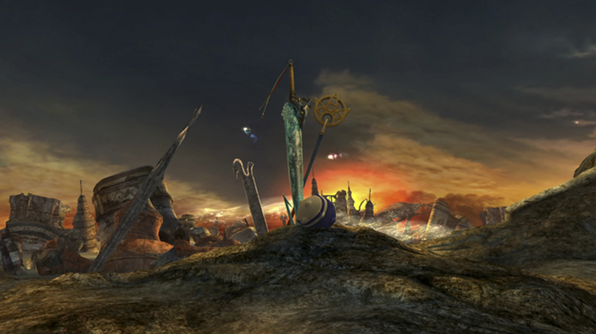
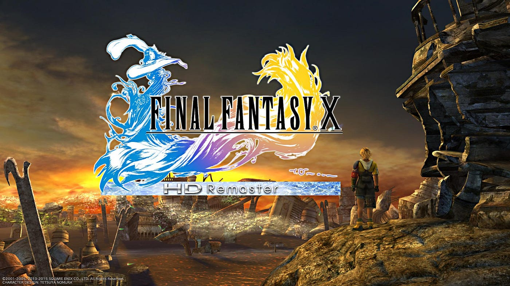
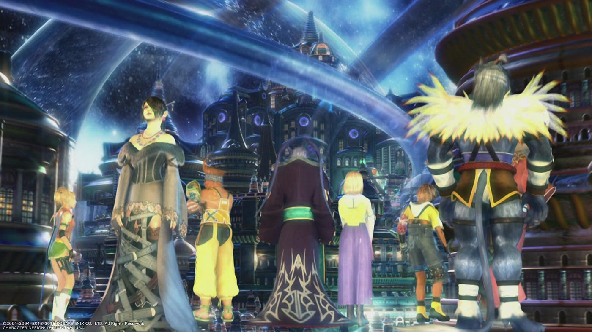

Primeros pasos en Final Fantasy X
Bienvenido a Spira, el mundo de Final Fantasy X. Esta guía te proporcionará los primeros pasos para comenzar tu aventura épica en este juego de rol clásico. Sigue estos consejos para aprovechar al máximo tu experiencia en Final Fantasy X.
1. Familiarízate con la Historia:
Antes de sumergirte en el juego, toma un momento para conocer la historia. Final Fantasy X presenta un mundo rico en mitología y personajes memorables. La historia sigue a Tidus, un joven jugador de blitzball, y Yuna, una invocadora, mientras enfrentan desafíos para salvar Spira.
2. Explora Zanarkand
Inicia el juego en la ciudad de Zanarkand. Sigue las indicaciones y disfruta de los eventos iniciales que te sumergirán en la trama. No te apresures; explora la ciudad y aprende sobre los controles y la mecánica del juego.
3. Aprende el sistema de combate
Familiarízate con el sistema de combate por turnos de Final Fantasy X. Presta atención a la barra CTB (Conditional Turn-Based Battle), que muestra el orden de los turnos. Aprovecha las habilidades únicas de cada personaje.
4. Sistema de Esferas
Al avanzar en el juego, desbloquearás el Sistema de Esferas. es un sistema de progresión de personajes en Final Fantasy X (FFX). En lugar de utilizar un sistema tradicional de niveles, este juego emplea un tablero de habilidades que los personajes avanzan utilizando Esferas, que se obtienen al derrotar enemigos. Aquí te explico cómo funciona:
- Acceso al Sphere Grid: Los personajes comienzan en puntos específicos del Sphere Grid. Cada personaje tiene su propio tablero, pero más adelante en el juego, algunos personajes pueden acceder a partes del tablero de otros personajes.
- Movimiento a través del Tablero: Para avanzar en el Sphere Grid, los personajes gastan "Esferas de Síntesis" que obtienen al derrotar enemigos. Cada celda del tablero tiene una habilidad, estadística o mejora asociada, y los personajes pueden moverse a través del tablero para desbloquear estas mejoras.
- Tipos de Esferas: Hay varios tipos de esferas, y cada una se utiliza para diferentes propósitos en el Sphere Grid
- Nodos del Tablero: Cada celda en el Sphere Grid es un "nodo". Al moverse a un nodo, el personaje obtiene la mejora asociada. Los nodos pueden contener mejoras de estadísticas como Fuerza, Magia, Velocidad, Defensa, y también pueden contener habilidades especiales como magias y habilidades de combate.
- Camino del Tablero: A medida que los personajes avanzan en el Sphere Grid, pueden tomar diferentes caminos. Algunos caminos pueden estar más orientados hacia la magia, mientras que otros se centran en habilidades físicas o estadísticas específicas.
- Esferas Especiales:A medida que avanzas en el juego, puedes obtener esferas especiales, como las Esferas de Llave (Key Spheres), que te permiten abrir cerraduras y acceder a áreas específicas del Sphere Grid, incluso a las de otros personajes.
- Esferas de Recuperación (Spheres de HP, MP, etc.): Además de las mejoras de estadísticas y habilidades, hay nodos especiales que otorgan aumentos directos a los puntos de salud (HP) y puntos de magia (MP) de un personaje.
5. Blitzball
Experimenta el emocionante juego de blitzball. Puedes jugar partidos en diferentes ubicaciones. Participa para ganar premios y mejora tus habilidades en este deporte acuático donde podrás encontrarlo en la ciudad de Luca al comienzo del juego.
6. Invocaciones y Eones
Conoce el sistema de invocaciones. Yuna puede invocar poderosos eones en la batalla. Aprende a utilizar sus habilidades y a mejorar su desempeño a medida que avances. A continuación os presentamos todos los que podemos encontrar en el juego.
- Valefor: Valefor es el primer eón que Yuna, la invocadora principal, obtiene en el juego. Es un ave con apariencia de ángel y es conocida por sus habilidades de ataque y su movilidad en la batalla.
- Ifrit: Ifrit es un eón de fuego con forma de demonio. Es conocido por sus poderosas habilidades de fuego y su capacidad para infligir daño a los enemigos con su aliento ardiente.
- Ixion: Ixion es un eón con apariencia de unicornio y relámpagos. Tiene habilidades eléctricas y puede infligir daño a los enemigos con sus ataques eléctricos.
- Shiva: Shiva es un eón de hielo y tiene forma de mujer con características gélidas. Es conocida por sus habilidades de hielo y su capacidad para congelar a los enemigos.
- Bahamut: Bahamut es uno de los eones más poderosos en el juego. Tiene la forma de un dragón y es conocido por sus habilidades devastadoras, incluido su ataque Mega Flare, que inflige un gran daño a todos los enemigos.
- Yojimbo: es un eón mercenario que trabaja por un pago. Puedes negociar con él durante la invocación y ofrecerle una cantidad de gil para que realice varios ataques, desde simples hasta muy poderosos.
- Anima: es un eón misterioso y poderoso que tiene una apariencia aterradora. Es crucial en la trama del juego y posee habilidades devastadoras, incluido su ataque Overdrive, "Pain," que causa un gran daño a los enemigos.
- Magus Sisters: son un conjunto de tres eones: Mindy, Sandy y Cindy. Cada una tiene habilidades únicas y, cuando se invocan juntas, pueden realizar ataques combinados poderosos.
Puntuación de la Crítica
| Revistas de Crítica | ||
|---|---|---|
| Revistas de Crítica | Puntuación | |
| Kotaku | 10 | |
| PC Gamer | 10 | |
| GamesRadar+ | 9 | |
| GameSpot | 8 | |
Este es un contenido de marcador de posición de párrafo adicional. Es una versión un poco más corta del otro cuerpo de texto altamente repetitivo que se usa en todas partes.
Secretos
"Los Aeon Oscuros": Una idea poco conocida de Final Fantasy X es la existencia de los Aeon Oscuros. Después de vencer a Yunalesca en Zanarkand, puedes regresar a la mayoría de los templos y desafiar a oscuros y poderosos eones oscuros. Cada uno de estos Aeon Oscuros presenta un desafío considerable y proporciona valiosas recompensas al ser derrotados. Esta opción adicional de juego ofrece a los jugadores la oportunidad de poner a prueba sus habilidades y obtener recompensas únicas.
Conoce más
- 
- 
- 
- 
Caratúla del juego Europa: May 24, 2002
Escena Iconica del FFX
Logo del remaster del FFX
Escena del juego
{kind=link}
{kind=link}
{kind=link}